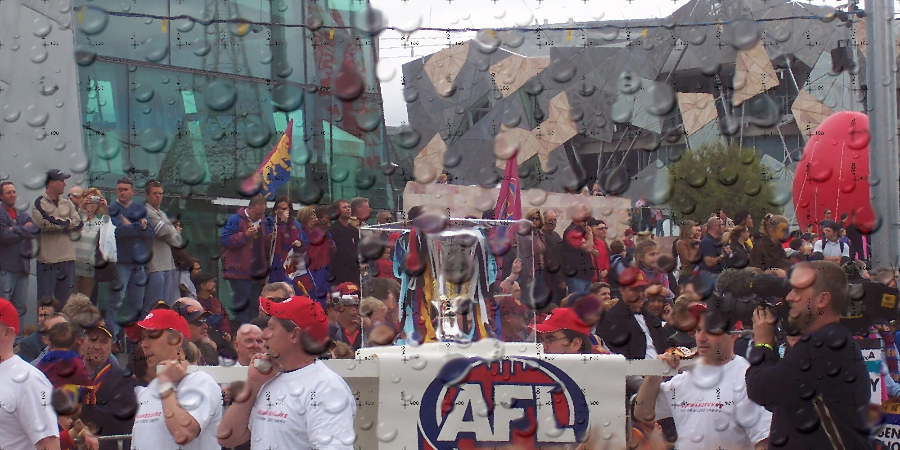
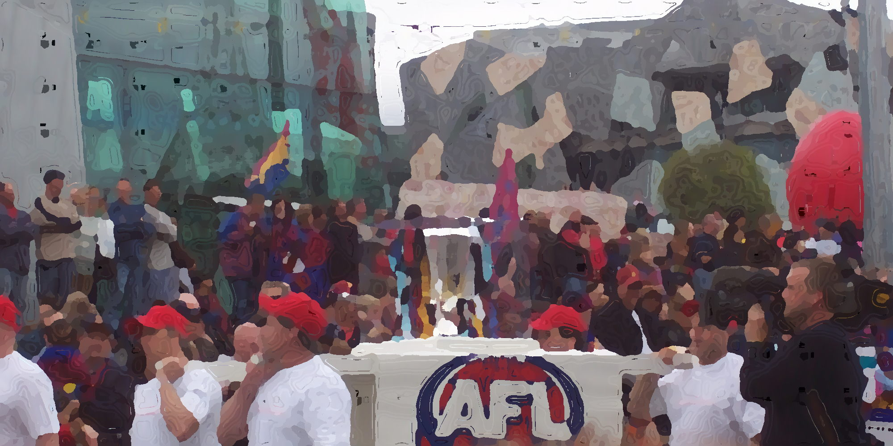
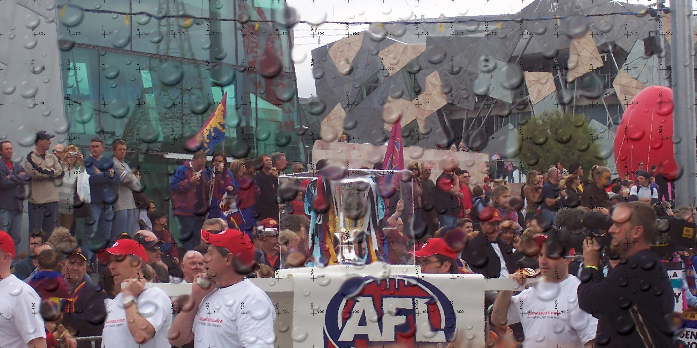
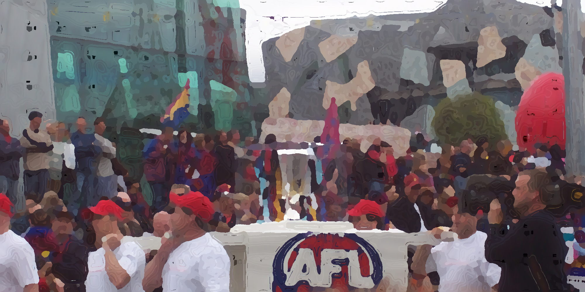

imgViewer2 Plugin - example extension to compare multiple image versions
 



Here I extend the imgViewer2 widget to overlay multiple versions of the same image with a display control to toggle between the image versions for comparison. Because Leaflet comes with lots of display capabilities this can be added with only a few lines of code.